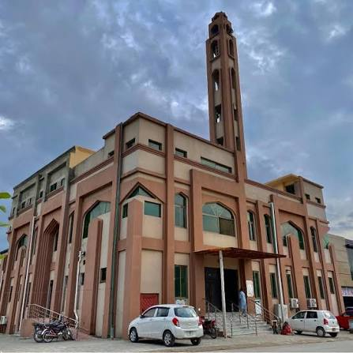

Fajr
Loading...
Dawn Prayer
Islamabad, Pakistan
A sanctuary of prayer, knowledge, and community — open to all.
Daily calculated times for Islamabad. Please confirm locally for the most accurate schedule.
Loading...
Dawn Prayer
Loading...
Midday Prayer
Loading...
Afternoon Prayer
Loading...
Sunset Prayer
Loading...
Night Prayer
Update Soon
Friday Congregation
﷽ — Prayer times vary by season. Please contact the masjid or consult a local Islamic calendar for precise timings.

Jamia Masjid Imam Shafi Ahl-e-Hadith is a masjid rooted in the tradition of following the Quran and authentic Sunnah. Named in honour of Imam Muhammad ibn Idris al-Shafi'i, the masjid strives to uphold scholarship, sincerity, and community service.
Located in Islamabad, it serves the local Muslim community through congregational prayers, Quranic education, and regular programmes for men, women, and youth — welcoming all who seek knowledge and closeness to Allah.
Regular gatherings that nurture faith, knowledge, and brotherhood.
Classes covering Tajweed, recitation, and memorisation for learners of all ages and levels.
Visit on FacebookRegular circles dedicated to understanding the authentic traditions of the Prophet ﷺ, with scholarly guidance.
Message on WhatsAppFriday sermon and congregational prayer — a weekly gathering of reflection, remembrance, and unity.
Watch on YouTubePeriodic talks and seminars on faith, fiqh, and contemporary Islamic topics — open to the community.
Visit on FacebookWe welcome visitors, worshippers, and students at any time.
Islamabad, Pakistan
All five daily prayers. Jummah every Friday.
Open to Muslims of all backgrounds for worship, learning, and community.
Every heart that remembers Allah finds peace. We welcome you.